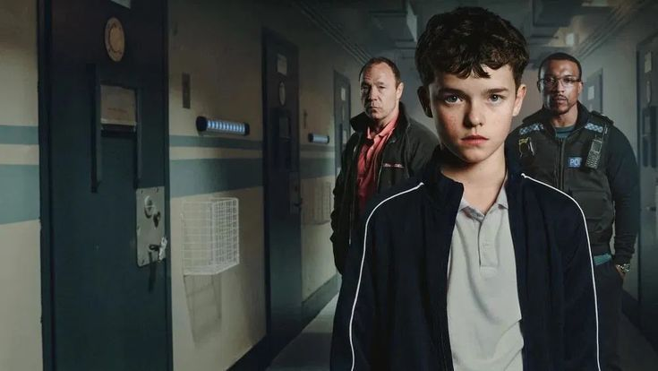
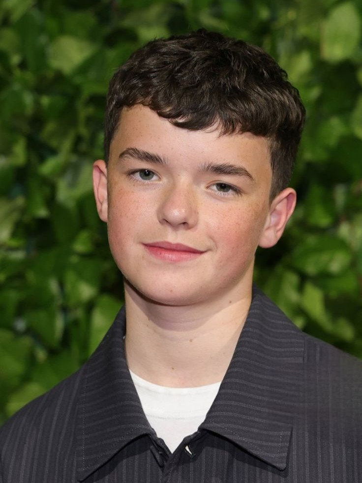
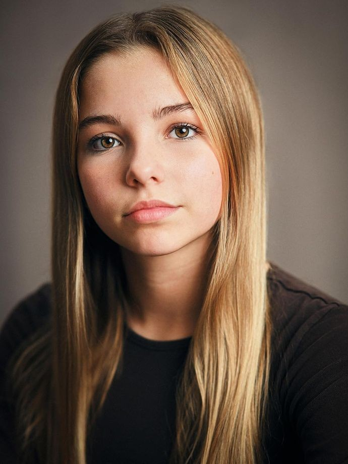
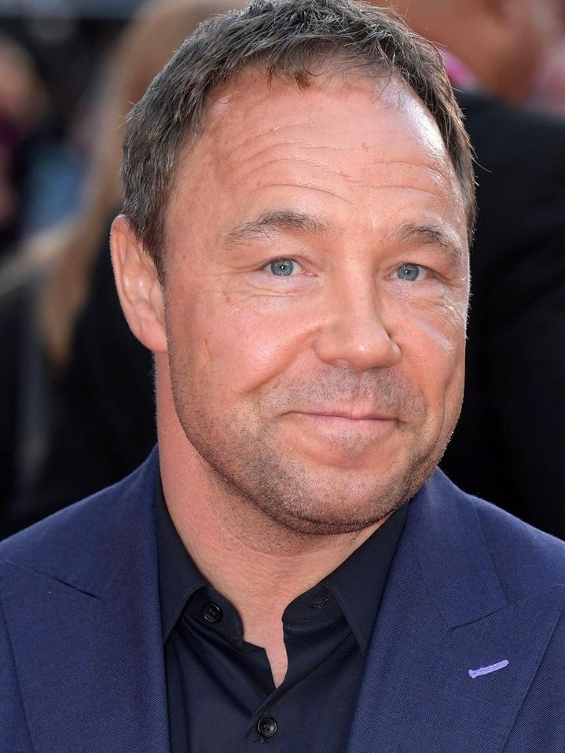
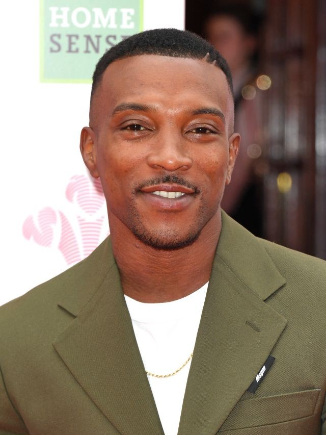

Sinopsis Serial Netflix "Adolescence" (2025): Gelapnya Dunia Remaja di Balik Layar
Adolescence adalah series original Netflix yang di rilis pada 13 Maret 2025. Adolescence yang merupakan serial asal UK ini hanya dibungkus dalam 4 episode. Meski jumlah episode terbilang singkat, Serial ini tetap menjadi menarik karena mengangkat tema yang cukup kompleks yaitu kriminal psikologi yang mengaitkan masa remaja, media sosial, dan sisi kelam dari dunia anak muda.
Cerita berpusat pada Jamie Miller, remaja 13 tahun yang tiba-tiba ditangkap polisi karena dituduh membunuh seorang gadis yang tak lain adalah teman sekolahnya, Katie. Dari situ, hidup Jamie berubah total. Dia harus menjalani interogasi intens, menghadapi pandangan curiga dari lingkungan sekitar, dan berusaha membuktikan siapa dirinya sebenarnya.
Selama proses penyelidikan, muncul banyak pertanyaan: apakah Jamie memang pelaku, atau dia hanya korban dari dunia online yang toxic?
Serial ini nggak cuma ngasih thriller vibe, tapi juga bikin kita merenung tentang bagaimana remaja zaman sekarang tumbuh dalam tekanan media sosial, bullying, dan ekspektasi yang berat.

Pemeran Utama
Supaya makin nyambung sama ceritanya, yuk kenalan dulu sama karakter dan pemeran di balik serial Adolescence:
Jamie Miller – Protagonis utama, anak 13 tahun yang jadi pusat kasus. Perannya dimainkan dengan intens banget, bikin penonton ikut kebawa ke dunia Jamie. Jamie Miller diperankan oleh Owen Cooper.

Owen Cooper as Jamie Miller
Katie – Teman sekolah Jamie sekaligus korban. Walaupun screentime-nya nggak sebanyak Jamie, karakter Katie punya pengaruh besar dalam alur cerita. Katie diperankan oleh Emilia Holliday.

Emilia Holliday as Katie
Eddie Miller – Ayah dari Protagonis utama yaitu Jamie Miller, figur yang digambarkan sangat struggle. Eddie Miller dan keluarga harus berjuang di tengah stigma sosial, rasa malu, dan dilema antara melindungi anak atau menghadapi kenyataan. Eddie Miller diperankan oleh Stephen Graham.

Stephen Graham as Eddie Miller
Detektif Luke Bascome – Detektif yang menangani kasus Jamie Miller, ia ditugaskan untuk menangkap dan menyelidiki kasus pembunuhan ini. Luke Bascome diperankan oleh Ashley Walters.

Ashley Walters as Detektif Luke
Briony Ariston – Seorang psikolog yang memeriksa kondisi psikologi Jamie Miller. Briony Ariston diperankan oleh Erin Doherty.
Erin Doherty as Psikolog Briony
Jadi, itulah beberapa pemeran utama yang sangat intens perannya dalam serial ini.
Insight
Adolescence bukan sekadar kisah kriminal, tapi juga refleksi soal kehidupan remaja modern. Beberapa insight penting yang bisa kita ambil:
Tekanan Media Sosial
Cyberbullying, pencitraan online, dan interaksi digital jadi pemicu konflik utama. Serial ini nunjukin gimana dunia online bisa sangat berdampak serius di kehidupan nyata.
Toxic Masculinity & Manosphere
Ada pertanyaan besar: apakah Jamie terpengaruh narasi-narasi online tentang maskulinitas toxic atau beracun? Serial ini ngasih gambaran bahwa ideologi semacam ini bisa gampang nyangkut di kepala anak muda.
Keluarga dan Lingkungan
Serial ini nyorot gimana pentingnya peran keluarga dalam perkembangan mental anak. Orang tua tidak hanya fokus pada hal “kasat mata” aja, tapi juga harus aware dengan dunia digital anak-anak mereka.